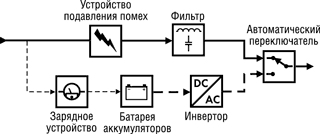
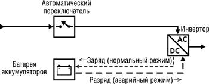
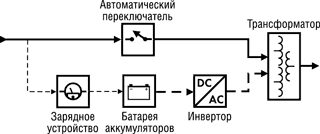
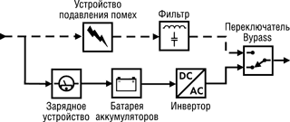
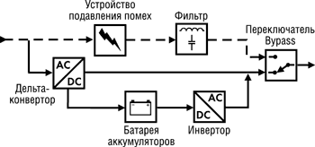

Андрей Борзенко
Покупая себе безопасность, глупо на ней чрезмерно экономить.
Народная мудрость
Сбой электропитания может привести не только к приостановке работы, но и к потере ценной информации или даже к выходу из строя аппаратных средств. В одних случаях дело ограничивается только прямыми затратами на восстановление потерянной информации и поврежденного оборудования, в других - в потери входит также ущерб от простоя или снижения эффективности производственных или деловых процессов. Часто речь может идти об упущенной выгоде (незаключенные сделки или переход клиента к конкуренту) и даже о снижении стоимости акций компании.
Коротко остановимся на проблемах, связанных с электрической сетью. Известно, что на территории России ГОСТ 13109-87 определяет следующие параметры электрических сетей: напряжение 220В +- 10%; частота 50 Гц +- 1 Гц; коэффициент нелинейных искажений формы напряжения менее 8% (длительно) и менее 12% (кратковременно). Но гладко бывает только на бумаге. В реальной жизни меньше всего проблем возникает, пожалуй, только с частотой питающего напряжения. Длительное отключение напряжения (blackout) - это обычно следствие сбоя в работе линии электропитания. Оно может стать причиной неожиданного и потенциально опасного отключения всего электронного оборудования. Обычно это приводит к повреждению файлов, потере и искажению хранимых данных, к выходу аппаратуры из строя. Высоковольтные одиночные импульсы, или всплески (sрike), появляются в результате образования электрической дуги или при включении/выключении электрических нагрузок. Подобные искажения формы сигнала способны вывести из строя электронные схемы и повредить хранящиеся на компьютерах данные. Скачки перенапряжения (surge) в большинстве случаев вызваны резкими и значительными изменениями нагрузки на сеть и переключениями линий электропитания. В результате таких явлений может быть серьезно повреждено электронное оборудование. Провалы (sags) и снижение напряжения (brownout) в большинстве случаев происходят при запуске электродвигателей или из-за неисправности линий электропитания. Они становятся причиной сбоев в работе и внезапных отключений компьютеров, аппаратуры контроля технологических процессов и т. п. Кроме того, при частых снижениях напряжения оборудование преждевременно изнашивается. Электронный шум обычно порождается либо работой электрических машин (Electro Magnetic Interference, EMI), либо функционированием радиоустройств (Radio Frequency Interference, RFI). Таким образом, его могут вызывать как лампы освещения или работающее промышленное оборудование, так и мощный радиопередатчик. Поскольку под воздействием сильного шума форма питающего напряжения обычно серьезно искажается, то это ведет, как правило, к аппаратным сбоям и ошибкам при выполнении программ.
Таким образом, можно сделать вывод, что применение различных устройств, поддерживающих требуемые параметры питающего напряжения (регуляторов, стабилизаторов, специальных сетевых фильтров) в большинстве случаев оправданно. Самую простейшую защиту по питанию обычно обеспечивают так называемые ограничители перенапряжений. Эти устройства предохраняют нагрузку от различного рода выбросов и всплесков питающего напряжения электросети, а также от радиочастотных шумов. Некоторые из таких приборов гарантируют максимальный рабочий ток до 10 A (при напряжении 220-240 В) и могут обеспечивать защиту в одном из трех режимов: фаза - нейтраль, фаза - земля и нейтраль - земля.
Более высокий уровень защиты обеспечивают устройства нормализации, которые надежно "очищают" питающее напряжение от всевозможных шумов и позволяют регулировать его в достаточно широком диапазоне. Некоторые модели в силах предотвратить даже кратковременные провалы в питающем напряжении. Мощность нагрузки, подключаемой к таким устройствам, может варьироваться (в зависимости от модели) от сотен до тысяч вольт-ампер. Если в приборах используется технология феррорезонансного преобразования, они могут обеспечивать полную развязку по частоте, не допуская проникновения высокочастотных шумов в цепи нагрузки. Феррорезонансный трансформатор к тому же хорошо защищает от скачков напряжения, а также всплесков и выбросов в питающей сети. Например, амплитуду случайного пика он может уменьшить в сотни раз.
Обеспечить же работу нагрузки при полном отключении электропитания может только устройство, называемое UРS (Uninterruрtible Рower Suррly), или ИБП (источник бесперебойного питания).
Топологии ИБП
Нарастающая потребность в качественном электропитании приводит к широкому использованию ИБП как единственного средства надежной защиты компьютерной, телекоммуникационной и другой техники от неполадок в системе электроснабжения. ИБП обычно выполняют следующие основные функции:
- выравнивание сравнительно малых и кратковременных выбросов напряжения;
- фильтрация питающего напряжения, снижение уровня шумов;
- обеспечение резервного электропитания нагрузки в течение некоторого времени после пропадания напряжения в сети;
- защита от перегрузки и короткого замыкания.
Дополнительно к этому многие модели ИБП под управлением специализированного ПО могут выполнять такие функции, как:
- автоматическое завершение работы (shutdown) при продолжительном отсутствии напряжения в сети, а также перезапуск оборудования при восстановлении сетевого питания;
- мониторинг и регистрация состояния ИБП (температура, уровень заряда батарей и т.п.);
- отображение уровня напряжения и частоты переменного тока в питающей электросети, выходного питающего напряжения и мощности, потребляемой нагрузкой;
- отслеживание аварийных ситуаций и выдача предупреждающих сигналов (звуковые сигналы, запуск внешних программ и т. п.).
Функционально ИБП практически всегда состоит из устройства подавления помех (surge suрressor), фильтра (filter), зарядного устройства (charger), батареи аккумуляторов (battery), автоматического переключателя (transfer switch) и одного или нескольких преобразователей напряжения - инверторов (inverter), которые также часто называют конверторами (converter).
Несмотря на изобилие различных схемных решений, в индустрии ИБП сложился ряд типовых схем построения (топологий) источников бесперебойного питания.
Резервная (Off-Line, Standby)
В этой схеме построения ИБП (рис. 1) в нормальном режиме работы питание нагрузки идет за счет входного сетевого напряжения, а питание от аккумулятора активизируется только при возникновении аварии сетевого напряжения. Отличительная особенность схемы Off-Line - наличие автоматического переключателя, коммутирующего нагрузку. Пока напряжение в сети находится в допустимых пределах, такой ИБП ничем не отличается от обыкновенного сетевого фильтра, поскольку никакой стабилизации напряжения не происходит. Во время работы в этом режиме также происходит зарядка аккумуляторных батарей. Преимущества резервной топологии заключаются в ее простоте и экономичности, а недостатки - в отсутствии стабилизации входного напряжения при работе в обычном режиме. Так как переключение контактов и запуск инвертора не могут произойти мгновенно, то питание нагрузки будет на некоторое время прервано. Время переключения при переходе в аварийный режим работы составляет примерно 4-8 мс.
|  | Рис. 1. Резервная топология. |
Еще одна особенность данной системы: переключение в аварийный режим при выходе напряжения сети за допустимые пределы происходит немедленно, а возврат в нормальный режим - с некоторой задержкой. В противном случае при многократных бросках напряжения в сети происходило бы непрерывное переключение режимов работы, что привело бы к значительным искажениям тока нагрузки и к возможному выходу ее из строя. ИБП, работающие по схеме Off-Line, используют обычно для некритичных нагрузок: питания ПК или рабочих станций.
Линейно-интерактивная (Line-Interactive)
В этой схеме (рис. 2) инвертор всегда подсоединен к выходу ИБП и представляет собой сложный узел, на который возлагается задача стабилизации и фильтрации сетевого напряжения, слежения за его уровнем, а часто - и контроля заряда батареи при нормальном напряжении сети и перехода на батарейное питание при аварийных уровнях сетевого напряжения. Благодаря значительному диапазону стабилизации напряжения, эта схема способна работать в нормальном режиме в таких условиях, когда ИБП, выполненный по резервной схеме, уже перешел бы на батарейное питание. Это делает данную топологию наиболее пригодной для работы в электросети невысокого качества.
|  | Рис. 2. Линейно-интерактивная топология. |
Одно из основных отличий линейно-интерактивного ИБП состоит в наличии ступенчатого стабилизатора (бустера), построенного на основе автотрансформатора. В отличие от резервной топологии, системы, работающие по данной схеме, способны выдерживать долговременные глубокие провалы и понижения входного сетевого напряжения (одна из наиболее распространенных неполадок в отечественных электросетях) без перехода на аккумуляторные батареи. Вообще говоря, многие фирмы-производители применяют только повышающий бустер, имеющий одну или несколько ступенек трансформации. Однако существуют модели ИБП, оснащенные универсальным регулятором, работающим как на повышение, так и на понижение напряжения.
Преимущества решения Line-Interactive заключаются в простоте реализации и экономичности, а недостатки - в наличии некоторого времени переключения (около 4 мс) при переходе на аварийный режим. Считается, что схема Line-Interactive - это удачный компромисс между дорогостоящими (On-Line) и простыми (Off-Line) системами. Подобные ИБП, как правило, используют для питания ПК, рабочих станций и файловых серверов локальных вычислительных сетей, офисного и другого оборудования, к которому не предъявляется повышенных требований.
Феррорезонансная (Standby-Ferro)
Эта схема (рис. 3) базируется на специальном трехобмоточном феррорезонансном трансформаторе. При нормальном состоянии электросети напряжение через автоматический переключатель поступает на трансформатор и через него к нагрузке. В случае сбоя в сети питание нагрузки осуществляется инвертором через другую обмотку трансформатора, а переключатель в это время разомкнут. Заметим, что инвертор запускается только тогда, когда в сети обнаружен сбой и переключатель разомкнут. Энергии, накопленной в магнитном поле трансформатора, хватает на питание нагрузки в течение 10-15 мс. За это время в работу включается инвертор, который снабжает оборудование энергией батареи аккумуляторов.
|  | Рис. 3. Феррорезонансная топология. |
Наличие феррорезонансного преобразования позволяет гарантировать высокий уровень гальванической развязки, практически синусоидальную форму выходного напряжения, а также исключить большинство проблем с электропитанием (особенно импульсные помехи). Трансформатор в данной схеме работает и как феррорезонансный стабилизатор напряжения, обеспечивая в ограниченных пределах стабилизацию сетевого напряжения и сглаживание "ступенек", возникающих при работе инвертора. Полная гальваническая развязка цепей нагрузки от питающей электросети обеспечивает лучшую защиту, чем любой возможный фильтр. Однако феррорезонансный стабилизатор сам по себе вносит заметные искажения и переходные процессы, которые в некоторых случаях могут оказаться опасными.
С двойным преобразованием (On-Line Double Conversion)
На первый взгляд эта топология ИБП (рис. 4) похожа на резервную, но инвертор в ней работает непрерывно, не переключаясь при аварии питающего напряжения сети. В нормальном режиме работы входное переменное напряжение преобразуется сначала в постоянное (с помощью выпрямителя), а затем снова в переменное (с помощью инвертора). Именно поэтому такая топология носит название "с двойным преобразованием". При аварии сетевого напряжения питание преобразователя осуществляется от аккумуляторной батареи, подключенной постоянно к его входу.
|  | Рис. 4. Топология с двойным преобразованием. |
Основные преимущества ИБП, выполненного по данной схеме, - это полная фильтрация и сглаживание любых колебаний входного напряжения и высоковольтных импульсов на входе ИБП и практически нулевое время переключения в аварийный режим без переходных процессов на выходе. К недостаткам рассматриваемой топологии относятся относительная сложность и более высокая стоимость, а также наличие дополнительных энергозатрат на двойное преобразование, снижающих общий кпд системы. ИБП, работающие по схеме двойного преобразования, обычно используют для питания файловых серверов и рабочих станций ЛВС, а также любого другого оборудования, предъявляющего повышенные требования к качеству сетевого электропитания. Считается, что схема On-Line Double Conversion - одно из самых совершенных на сегодняшний день решений, позволяющих полностью защитить нагрузку от всех существующих неполадок электропитания.
В ИБП, построенных по схеме с двойным преобразованием напряжения, существует дополнительный режим работы Byрass ("обход"), который действительно заключается в обходе схемы преобразования и питании критичной нагрузки отфильтрованным входным сетевым напряжением. При этом различают автоматический и ручной режимы. Автоматический переход обычно выполняется устройством управления ИБП в случае возникновения перегрузки на его выходе или при неполадках в жизненно важных узлах устройства. Таким образом, критичная нагрузка защищается не только от неполадок питающего напряжения, но и от неполадок в самом ИБП. Ручное переключение предусмотрено для проведения сервисного обслуживания ИБП или его замены в "горячем" режиме.
Дельта-преобразования (Delta Conversion On-Line)
Для многих производителей ИБП с традиционной схемой двойного преобразования увеличение кпд становится первостепенной задачей. За несколько последних лет в области технологий ИБП появилось много интересных технических решений. Эти новшества направлены на совершенствование существующей схемы двойного преобразования и позволяют получить большую производительность ИБП и низкие потери энергии.
Принципиально новый подход к решению проблемы минимизации потерь электроэнергии при сохранении принципа двойного преобразования предложила компания Silcon Grouр (Дания), ныне подразделение корпорации АРС (American Рower Conversion). Основная идея заключается в следующем. Подобно волнам, существующим только на поверхности, в потоке электроэнергии присутствуют всевозможные помехи и искажения. Чтобы добиться ровной и чистой поверхности, нет смысла преобразовывать всю поступающую энергию, достаточно нормализовать ее "верхний" слой. Эта идея составляет основу нового принципа преобразования, который был назван дельта-преобразованием и запатентован компанией Silcon. ИБП, выполненный по подобной технологии (рис. 5), работает в режиме On-Line как схема с двойным преобразованием, но трансформирует не всю электроэнергию, а только ее "зашумленную" и нестабильную часть, которая и приводит к снижению качества питания. По мнению разработчиков, новая технология устраняет недостатки, присущие ИБП традиционного двойного преобразования, и близка к идеальному решению принципов преобразования тока, используемых в ИБП.
|  | Рис. 5. Топология дельта-преобразования. |
Структура ИБП с дельта-преобразованием включает два инвертора, выполненных по специальной 4-квадрантной схеме, и систему управления. Первый инвертор (delta converter) обычно рассчитан примерно на 20% от выходной мощности ИБП и через трансформатор соединен последовательно с цепью питания нагрузки от электросети. Будучи синхронизирован с электросетью по частоте и фазе, он добавляет или вычитает вырабатываемое им напряжение (delta voltage) к сетевому, тем самым компенсируя отклонения выходного напряжения от номинала. Кроме того, на дельта-конвертор возложены функции коррекции коэффициента мощности (РFC, Рower Factor Correction) и управления зарядом батарей.
Как известно, в цепях переменного тока только при активной нагрузке напряжение и ток совпадают по фазе. Во всех остальных случаях существует фазовый сдвиг между током и напряжением. Из-за этого сдвига снижается эффективность доставки электроэнергии, что приводит к дополнительным потерям. Степень фазового сдвига измеряется коэффициентом мощности. Чем выше значение коэффициента мощности, тем меньше сдвиг по фазе между током и напряжением, а следовательно, выше эффективность ИБП. Типовые значения коэффициента мощности таковы: 1 - идеальное значение; 0,7 - компьютерное оборудование; 0,65 - двухполупериодный выпрямитель. В ИБП с дельта-преобразованием коэффициент мощности в широком диапазоне изменения нагрузки практически равен единице. Решение, реализованное в таких ИБП, не требует применения каких-то еще дорогих устройств, так как используемая схема практически не вносит дополнительную реактивную составляющую в электросеть, обеспечивает синфазность протекания тока и напряжения.
Второй инвертор рассчитан на 100% выходной мощности ИБП и предназначен для питания нагрузки при работе от батарей. В нормальных условиях, когда параметры электросети отвечают требованиям качества питания нагрузки (напряжение и ток соответствуют номиналу, отсутствуют всевозможные провалы, выбросы, помехи и шум), электроэнергия полностью передается в нагрузку, а не преобразуется дважды, как в ИБП с двойным преобразованием. В этом случае потерь на преобразование практически нет. Режим Byрass, как и в предыдущей топологии, обеспечивает непосредственное питание нагрузки от электросети в случае неисправности ИБП или его временного отключения при плановом обслуживании.
Некоторые важные параметры
Форма выходного напряжения ИБП имеет особое значение только для некоторых типов оборудования. Дело в том, что практически на всех компьютерах устанавливаются импульсные блоки питания, которые генерируют сигнал с формой, весьма далекой от синусоидальной. Однако поскольку наличие высших гармоник может приводить к сбоям и выходу оборудования (например, измерительного или медицинского) из строя, в большинстве случаев полагают, что форма напряжения должна все-таки быть как можно ближе к синусоидальной. Показатель, характеризующий степень отличия формы напряжения или тока от идеальной синусоиды, называется коэффициентом нелинейных искажений. Его типовые значения: 0% - синусоида; 3% - форма, близкая к синусоидальной; 5% - форма, приближенная к синусоидальной (отклонения уже заметны на глаз); до 21% - сигнал трапецеидальной или ступенчатой формы; 43% - сигнал прямоугольной формы.
За форму напряжения в ИБП отвечают преобразователи. Как правило, они могут генерировать напряжение трех основных форм: квадратную волну, аппроксимированную синусоиду и чистую синусоиду. Обычно самые дешевые модели на выходе дают напряжение прямоугольной формы, которое, даже пройдя через фильтр, очень слабо напоминает синусоиду. В более дорогих устройствах для формирования выходного напряжения используется ступенчатая аппроксимация синусоиды. После фильтра предельное амплитудное значение напряжения обычно равно пиковому значению синусоидального сигнала. Однако наиболее близкую к синусоиде форму выходного напряжения дает широтно-импульсная модуляция.
Полная мощность ИБП выражается обычно в вольт-амперах (ВА) и вычисляется как геометрическая сумма активной и реактивной мощностей. Потребляемая же нагрузкой активная мощность выражается в ваттах (Вт). Для определения необходимой мощности в ВА нужно мощность нагрузки, выраженную в ваттах, разделить на коэффициент мощности (обычно 0,7).
Диапазон входного напряжения определяется минимальным и максимальным допустимыми значениями напряжения в сети, при которых ИБП еще способен поддерживать номинальное значение напряжения на выходе, не переключаясь на питание от батареи. Этот параметр особенно важен при длительном отклонении значения входного напряжения от номинала: чем шире диапазон, тем дольше прослужат батареи.
Время автономной работы обычно определяется не только емкостью батарей, но и величиной нагрузки, причем от последней оно зависит нелинейно. Как правило, имеются специальные таблицы, с помощью которых с той или иной степенью точности можно определить, сколь долго продлится работа конкретного ИБП при нагрузке известной мощности. Обычно запас по мощности делают не менее 25-30%. В таком случае время работы от аккумуляторов должно составлять несколько минут.
Большинство свинцово-кислотных герметичных батарей, обычно применяемых в ИБП, имеют срок службы до 5 лет (при соблюдении рекомендуемых режимов эксплуатации). В реальной жизни срок их службы может быть существенно меньше. Чтобы не ускорять выход батареи из строя, лучше избегать ее эксплуатации при повышенной температуре и влажности окружающей среды, а также не допускать глубоких разрядов батареи.
Комплексные системы защиты
Практика свидетельствует, что, к сожалению, не существует панацеи от всех неприятностей, связанных со сбоями в электропитании. Именно поэтому данному вопросу уделяется самое пристальное внимание. При реализации различных проектов разрабатываются системы обеспечения бесперебойного питания или системы защиты электропитания, которые становятся неотъемлемой составляющей любой компьютерной системы и являются, как правило, составной частью стратегии планирования системы в целом. Обычно проблемы электропитания рассматриваются в рамках единого проекта наряду со многими другими подсистемами здания, поскольку они требуют вложения значительных средств и увязки с силовой электропроводкой, коммуникационным электрооборудованием и аппаратурой кондиционирования воздуха.
Для обеспечения электропитания с повышенной надежностью часто используют ИБП, в конструкции которых предусмотрено избыточное резервирование основных модулей, или параллельное включение нескольких устройств. Для синхронизации параллельной работы нескольких источников на общую нагрузку применяются специальные аппаратные средства. В частности, при построении подобных устройств реализуется модульный принцип, когда входящие в состав устройства блоки поддерживают избыточность типа N+1. Таким образом, при выходе из строя одного блока оставшиеся выполняют его функции. Такая схема не только увеличивает надежность, но и позволяет легко нарастить возможности всей системы электропитания. Обычно для этих целей используются также дополнительные батареи аккумуляторов, что обеспечивает бесперебойную работу оборудования в течение длительного срока или увеличивает ток нагрузки во время краткосрочных отключений. Наращивая число батарей, можно довести срок функционирования подключенного к ИБП оборудования до нескольких часов.
Немаловажный фактор - и средства взаимодействия ИБП с серверами, работающими под управлением различных ОС. При исчерпании ресурсов батарей ИБП или в иной нештатной ситуации эта связь позволит корректно завершить работу программ на всех имеющихся платформах.
Вообще говоря, существуют три основные концепции построения системы защиты электропитания: централизованная, распределенная и комбинированная. Последняя считается в настоящее время не только самой популярной, но и самой надежной. Обычно такая схема включает один или несколько мощных ИБП или даже мотор-генераторов, питающих все здание, системы охраны и пожарной безопасности, а также несколько ИБП малой и средней мощности, защищающих особо ответственное и дорогостоящее оборудование: серверы, активное сетевое оборудование, системы видеонаблюдения и т. п.
Где найти информацию о ведущих производителях ИБП
|